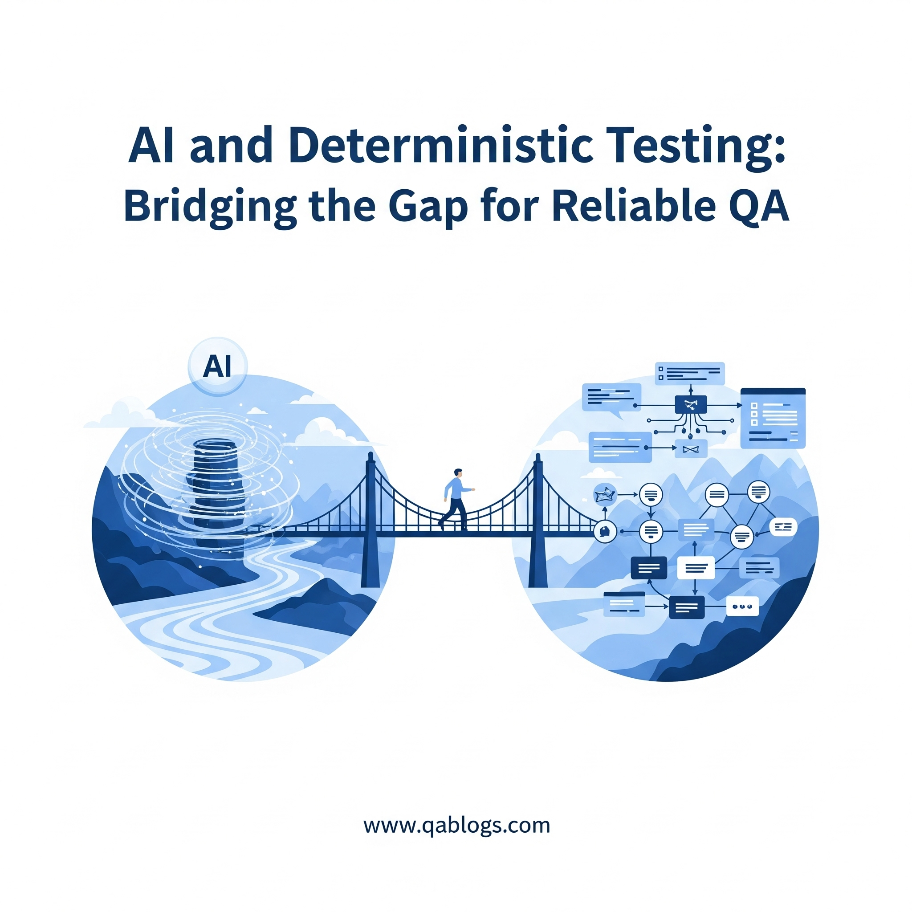

AI and Deterministic Testing: Bridging the Gap for Reliable QA

Key Takeaways
- Learn how to combine AI's probabilistic nature with deterministic testing
- Discover practical strategies for reliable QA in AI-driven applications
- Explore real-world applications and best practices
- Understand the challenges and solutions in modern testing
In the ever-evolving landscape of software testing, the integration of artificial intelligence (AI) has introduced both opportunities and challenges for Quality Assurance (QA) professionals. One of the most significant hurdles is reconciling AI's probabilistic nature with the need for deterministic testing—a cornerstone of traditional QA that ensures predictable, repeatable results. As of June 2025, with AI-driven tools like Google Jules and KaneAI transforming testing workflows, understanding how AI can complement deterministic testing is crucial for reliable software quality. This blog on QA Blogs explores the intersection of AI and deterministic testing, highlights the challenges, and offers strategies to bridge the gap, all while optimizing for SEO to reach QA professionals seeking modern testing insights.
What is Deterministic Testing?
Deterministic testing refers to a testing approach where, given a specific input, the software produces a predictable, consistent output every time. It's the bedrock of traditional QA, ensuring reliability and repeatability in software behavior.
Example: In a calculator app, entering 2 + 2 should always return 4. A deterministic test would verify this outcome remains the same across multiple runs.
Why It Matters: Deterministic testing guarantees that software behaves as expected, making it easier to identify bugs and ensure stability in production.
Traditional software, built on rule-based logic, aligns naturally with deterministic testing. However, AI systems, which rely on probabilistic models and continuous learning, challenge this approach, creating a need for new strategies in QA.
The Rise of AI in Software Testing
AI is revolutionizing QA in 2025, with tools like Google Jules (launched in May 2025) and LambdaTest's KaneAI automating test generation, execution, and maintenance. A 2025 Katalon report notes that 72% of QA teams now use AI to enhance efficiency, focusing on:
- Test Case Generation: AI creates test cases by analyzing codebases and user behavior.
- Defect Prediction: Machine learning (ML) identifies high-risk areas in code, prioritizing testing efforts.
- Self-Healing Tests: AI-driven tools adapt to UI changes, reducing test maintenance.
While these advancements accelerate testing, AI's probabilistic nature—where outputs can vary even with identical inputs—clashes with the deterministic expectations of traditional QA, creating a unique challenge.
The Challenge: AI's Probabilistic Nature vs. Deterministic Testing
AI systems, particularly those using ML or deep learning, operate on probabilities rather than fixed rules. This introduces several challenges when applying deterministic testing:
- Unpredictable Outputs: AI models may produce varying results for the same input due to their probabilistic nature. For example, a chatbot might respond differently to the same query based on its training data or real-time learning.
- Model Drift: AI models evolve over time as they're retrained with new data, leading to "model drift." A test that passes today might fail tomorrow, undermining the repeatability of deterministic testing.
- Complex Metrics: Deterministic testing focuses on binary pass/fail outcomes, but AI testing requires evaluating metrics like accuracy, precision, and recall, which are harder to pin down with certainty.
- Black-Box Problem: Many AI models are opaque, making it difficult to understand why a particular output was generated. This lack of transparency complicates deterministic validation.
- Edge Cases: AI systems often struggle with edge cases not covered in training data, leading to unexpected behavior that deterministic tests might miss.
These challenges highlight the need for a hybrid approach that leverages AI's strengths while maintaining the reliability of deterministic testing.
Bridging the Gap: Strategies for Combining AI and Deterministic Testing
To ensure reliable QA, here are practical strategies to integrate AI with deterministic testing in 2025:
1. Use Statistical Testing for AI Outputs
Since AI outputs are probabilistic, replace strict pass/fail criteria with statistical thresholds to evaluate results within an acceptable range.
How It Works: Define a range of expected outcomes based on historical data or model performance metrics. For example, if testing an AI recommendation engine, verify that 90% of recommendations align with user preferences.
Tools: Use TensorFlow Model Analysis to monitor AI performance metrics like precision and recall over time.
Benefit: This approach accommodates AI's variability while ensuring consistency within defined boundaries.
2. Implement Deterministic Checks for Critical Components
For critical, non-AI components of the system, maintain traditional deterministic testing to ensure reliability.
How It Works: If an AI-driven chatbot integrates with a login system, use deterministic tests to verify the login functionality (e.g., entering correct credentials always grants access) while applying statistical testing to the chatbot's responses.
Tools: Selenium or Playwright for deterministic UI testing of non-AI components.
Benefit: Ensures core functionalities remain predictable, even in AI-driven applications.
3. Monitor and Mitigate Model Drift
Model drift can undermine deterministic testing by altering AI behavior over time. Proactively monitor and address it to maintain consistency.
How It Works: Regularly compare AI outputs against a baseline dataset to detect drift. If drift occurs, retrain the model with updated data and re-run tests.
Tools: Prometheus or Grafana for real-time monitoring of model performance; Datadog for drift detection.
Benefit: Keeps AI behavior aligned with expected outcomes, supporting deterministic principles.
4. Leverage Explainable AI (XAI) for Transparency
The black-box nature of AI complicates deterministic testing. Explainable AI techniques can provide insights into model decisions, enabling more precise validation.
How It Works: Use XAI tools to understand why an AI model produced a specific output, then create deterministic tests for key decision paths. For example, if an AI denies a loan application, XAI can reveal the contributing factors (e.g., low credit score), which you can test deterministically.
Tools: SHAP or LIME for interpreting AI model decisions.
Benefit: Bridges the gap between AI's opacity and the need for deterministic validation.
5. Combine AI-Driven Testing with Human Oversight
AI excels at generating and executing tests, but human judgment is essential for validating complex scenarios and ensuring deterministic reliability.
How It Works: Use AI tools like KaneAI to generate test cases, then manually review and refine them to ensure they align with deterministic expectations. For example, verify that AI-generated tests for a payment system cover all edge cases deterministically.
Tools: KaneAI for test generation; Jira for manual review and bug tracking.
Benefit: Combines AI's efficiency with human insight, ensuring comprehensive and reliable testing.
6. Test for Edge Cases with Deterministic Scenarios
AI systems often fail on edge cases, which deterministic testing can catch by explicitly defining expected behavior.
How It Works: Identify edge cases (e.g., invalid inputs, extreme values) and create deterministic tests to verify AI behavior. For instance, if testing an AI image recognition system, ensure it correctly handles a blank image by returning a predefined error message.
Tools: Fuzz testing with tools like AFL (American Fuzzy Lop) to generate edge cases; Postman for API edge-case testing.
Benefit: Ensures AI systems handle unexpected inputs predictably, aligning with deterministic principles.
7. Integrate with CI/CD for Continuous Validation
Continuous integration/continuous deployment (CI/CD) pipelines can help maintain deterministic testing standards in AI-driven projects.
How It Works: Automate deterministic tests for non-AI components and statistical tests for AI components within a CI/CD pipeline. Run these tests with every code change to catch issues early.
Tools: Jenkins or GitHub Actions for CI/CD; TestNG for test automation.
Benefit: Provides ongoing validation, ensuring AI-driven changes don't break deterministic expectations.
Real-World Applications
Combining AI and deterministic testing is critical across industries in 2025:
- E-commerce: Use deterministic testing for checkout processes (e.g., payment always succeeds with valid inputs) while applying statistical testing to AI-driven product recommendations.
- Healthcare: Ensure deterministic reliability in patient record systems while using AI to predict diagnoses, validated through statistical thresholds.
- Finance: Apply deterministic tests to transaction processing while leveraging AI for fraud detection, monitored for drift and accuracy.
Benefits of Bridging AI and Deterministic Testing
- Reliability: Ensures critical functionalities remain predictable, even in AI-driven systems.
- Efficiency: AI automates repetitive tasks, while deterministic testing focuses human efforts on high-impact areas.
- Scalability: Statistical testing and CI/CD integration allow QA to scale with complex AI applications.
- Trust: Transparent validation with XAI builds confidence in AI outputs, aligning them with deterministic standards.
Challenges to Watch For
- Learning Curve: QA teams may need to upskill in AI concepts like model drift and statistical testing.
- Tool Integration: Combining AI tools with deterministic testing frameworks requires careful setup.
- Balancing Effort: Over-focusing on deterministic testing for AI components can slow down workflows—prioritize critical areas.
FAQs
What is deterministic testing?
Deterministic testing ensures that a given input always produces the same output, guaranteeing predictability and reliability in software behavior.
Why does AI challenge deterministic testing?
AI's probabilistic nature leads to varying outputs, model drift, and opacity, making it hard to achieve the consistent results expected in deterministic testing.
How can QA teams combine AI with deterministic testing?
Use statistical testing for AI outputs, apply deterministic tests to critical components, monitor model drift, and leverage XAI for transparency.
What tools help bridge AI and deterministic testing?
Tools like TensorFlow Model Analysis, SHAP, Selenium, and Jenkins support both AI-driven and deterministic testing workflows.
Conclusion
AI and deterministic testing may seem at odds, but with the right strategies, they can complement each other to deliver reliable, high-quality software in 2025. By using statistical testing, maintaining deterministic checks for critical components, monitoring model drift, and integrating with CI/CD, QA teams can harness AI's efficiency while ensuring predictability. As AI continues to shape testing, bridging this gap will be key to staying ahead in the QA field. Start exploring these strategies today to elevate your testing game!
Ready to master modern QA challenges? Dive into more insights at QA Blogs and share your thoughts on AI in testing!
Join Our Community of QA Professionals
Get exclusive access to in-depth articles, testing strategies, and industry insights. Stay ahead of the curve with our expert-curated content delivered straight to your inbox.
Nikunj Mistri
Founder, QA Blogs
About the Author